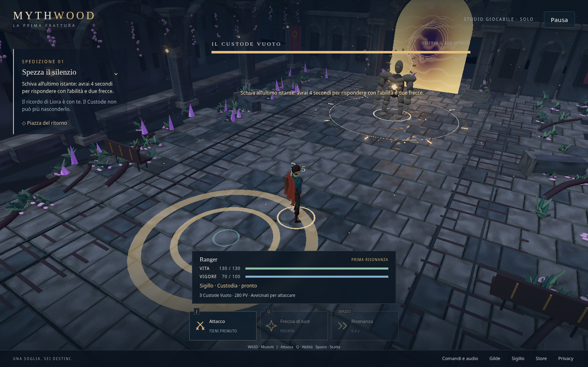
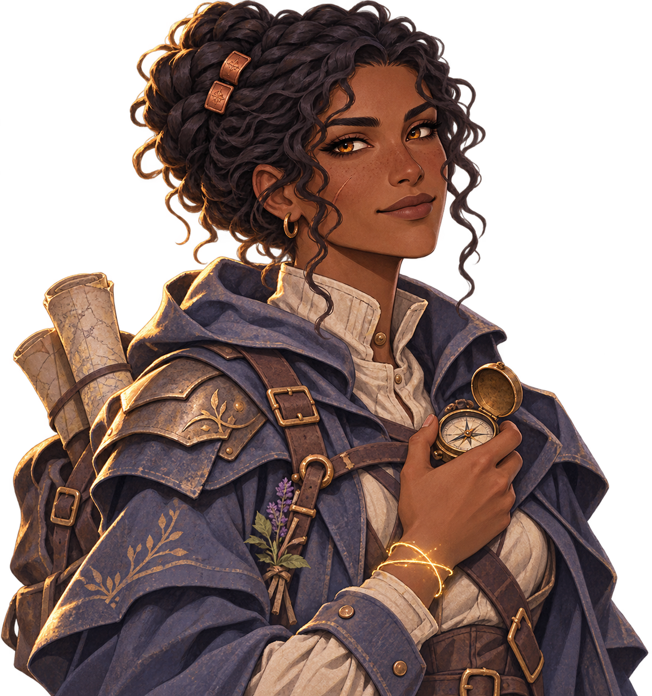

Custode della soglia
Scudo d’urto
Una barriera assorbe i colpi. L’urto interrompe i nemici vicini.
Prova il tuo ruolo nella demo →
Demo gratuita nel browser
Una squadra scomparsa. Una gilda che riscrive le mappe. E una promessa: tornare a prendere chi è rimasto indietro.
Versione di sviluppo · Grafica e bilanciamento provvisori
Il primo frammento
Liora è rimasta con chi sentiva i sussurri. Ora il Custode impedisce al suo ricordo di uscire. Libera gli echi, accogli la sua promessa e scopri chi ha cambiato la rotta della squadra.

«Ci hanno ordinato di lasciare indietro chi sentiva le voci. Io sono rimasta.»
Il tuo modo di affrontare la Frattura
Sei ruoli giocabili. Un primo risveglio e due accordature del Sigillo da sperimentare.
Custode della soglia
Una barriera assorbe i colpi. L’urto interrompe i nemici vicini.
Prova il tuo ruolo nella demo →Dal gioco attuale
Un assaggio del combattimento e del primo risveglio, registrato dalla demo attuale.
Giocabile con tastiera o comandi touch. Video montato da una tappa salvata della demo, con audio creato per il montaggio.
Costruirlo insieme
MYTHWOOD è stato ripensato attorno a storia, combattimento e crescita del personaggio. Questa demo è il primo passo concreto.
Oggi puoi giocare da solo ed esplorare tre aree collegate. Gilde, cooperativa e un mondo più ampio sono la direzione futura: non sono ancora disponibili.
Prova il primo frammento →Prima di aprire acquisti, vogliamo capire cosa ti fa tornare a giocare. Il pacchetto sostenitore è in preparazione: nella demo non ci sono pagamenti.
Lascia una risposta dopo la prova ↓Dopo aver giocato
La risposta resta sul tuo dispositivo. Puoi condividerla con chi ti ha invitato oppure scaricarla e inviarla tu. Non viene raccolta automaticamente.
Questa pagina non attiva analytics o moduli di invio. La pagina Account usa un servizio di autenticazione separato quando configurato. Il gioco può conservare le tappe sul dispositivo solo se scegli di abilitarlo. Il feedback qui sopra viene preparato localmente: scegli tu se e con chi condividerlo. L’hosting può trattare dati tecnici di accesso secondo le proprie condizioni.